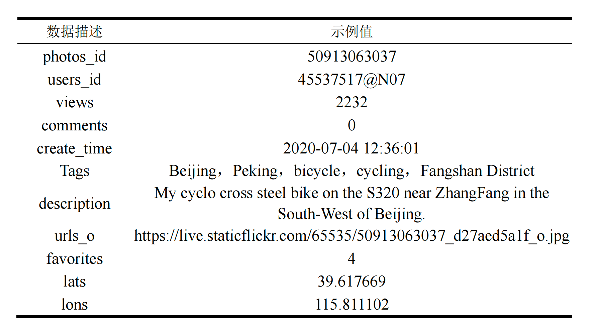
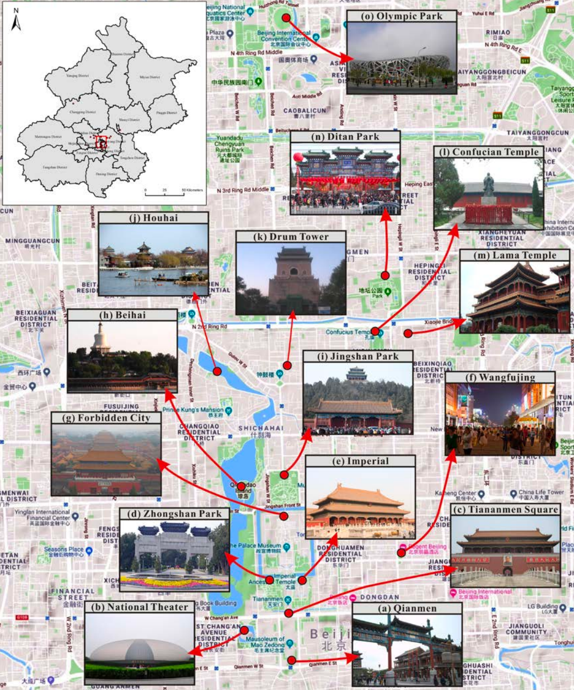
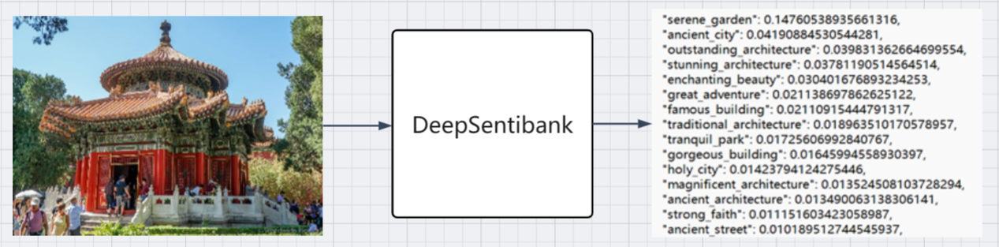

基于Python语言，结合Flickr网站免费提供的API，直接调用网站的方法爬取网站的照片信息，照片的唯一标识是照片的识别码，即PHOTO_ID将作为照片入库去重的唯一标识字段。

去重后得到照片数量及分布如图所示：

使用SpaSeD-Cluster得到如下北京市主要景点：

调用DeepSentiBank模型处理图片得到如下形容词+名词的组合，为后续的情绪意向模型构建打下基础

返回主页2022年大学生创新创业项目
使用Flickr平台的用户生成数据(UGC)构建北京市城市情感意向特征模型
基于Python语言，结合Flickr网站免费提供的API，直接调用网站的方法爬取网站的照片信息，照片的唯一标识是照片的识别码，即PHOTO_ID将作为照片入库去重的唯一标识字段。

去重后得到照片数量及分布如图所示：
使用SpaSeD-Cluster得到如下北京市主要景点：

调用DeepSentiBank模型处理图片得到如下形容词+名词的组合，为后续的情绪意向模型构建打下基础

返回主页